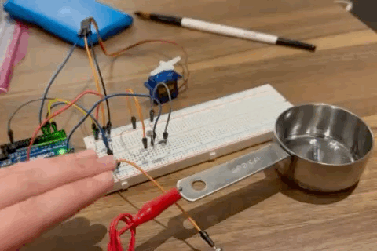

Home
Assignment 5: High(er) voltage and transistors!
Planning
For my two inputs, I wanted to use a photoresistor and a capacitor.
For my output, I wanted to use a servo motor.
I planned to use the Servo and CapacitiveSensor libraries.
Schematic and calculations
I drew a schematic to visualize the circuit system.
To calculate the capacitor resistor value, I referenced Lesson 8.
On slide 18, we are instructed to use a 1MΩ resistor for absolute touch to activate the sensor.
To calculate the photoresistor resistor value, I did the same calculation that I did in A3.
"For the resistor next to the photoresistor (R_B), I used the photoresistor datasheet to see what range of resistances the photoresistor could achieve (R_A).
R_A's range was about 1KΩ to 100KΩ.
In accordance with the V_Out equation, R_B should be equal magnitudes away from R_A,
low and R_A, high. Therefore, I used the geometric mean to determine that a 10KΩ resistor
would be suitable for this circuit."
– Jordan of A3

Construction
I built my circuit using:
- My breadboard
- My Arduino UNO
- Wires
- A metal measuring cup
- A photoresistor
- A servo motor
- Alligator clips
- A 10KΩ resistor
- A 1MΩ resistor
Code
I then wrote the code so the motor would rotate back and forth if the photoresistor was shaded
or the measuring cup was touched.
// capacitive sensor library
#include <CapacitiveSensor.h>
// set up the Capacitive sensor with a send and recieve pin
CapacitiveSensor cs_s2_r4 = CapacitiveSensor(2,4); // first param is send, second is receive
// set up LED strip pin
const int ledPin = 5;
// capacitor variables
int capSensor = 0; // capacitor sensor value
int capSensorMin = 0; // min capacitor sensor value
int capSensorMax = 0; // max capacitor sensor value
// LED variable
int brightness = 0;
void setup() {
// put your setup code here, to run once:
cs_s2_r4.set_CS_AutocaL_Millis(0xFFFFFFFF); // turn off autocalibrate on channel 1 - just as an example
pinMode(ledPin, OUTPUT); // set up LED brightness PWM pin
Serial.begin(9600); // begin Serial communication to print values
// turn on LED to signal the start of the calibration
pinMode(LED_BUILTIN, OUTPUT);
digitalWrite(LED_BUILTIN, HIGH);
capSensorMin = capSensor; // make sure nonzero so it can ramp up
// calibrate during the first ten seconds
// (touch and then go far away repeatedly to get measurements)
while (millis() < 10000) {
capSensor = cs_s2_r4.capacitiveSensor(30); // call the function to get the capacitive sensor value with 30 samples
// record the maximum sensor value
if (capSensor > capSensorMax) {
capSensorMax = capSensor;
}
// record the minimum sensor value
if (capSensor < capSensorMin) {
capSensorMin = capSensor;
}
}
// print values to serial monitor for recordkeeping
Serial.print("Max capacitor value: ");
Serial.println(capSensorMax);
Serial.print("Min capacitor value: ");
Serial.println(capSensorMin);
// signal the end of the calibration
digitalWrite(LED_BUILTIN, LOW);
}
void loop() {
// read the sensor
capSensor = cs_s2_r4.capacitiveSensor(30);
// in case the sensor value is outside the range seen during calibration
capSensor = constrain(capSensor, 0, 1023);
// map the sensor values to analog write values
brightness = map(capSensor, capSensorMin, capSensorMax, 3, 200); // 3 to reduce flicker; 200 to not burn my corneas out
// the LED strip brightness should correspond with how close i am to the sensor
analogWrite(ledPin, brightness);
}
Testing
I uploaded my code and took my servo for a spin!

Additional questions
1: These are the datasheets for the n-mosfet transistor: DMT6009LCT, IRLZ44N, P30N06LE.
Read the text on your mosfet to see which one you have. For your mosfet, what is the absolute
maximum amount of current between pins 2 and 3?
 I have the IRLZ44N N-MOSFET transistor. The absolute max current between pins 2 and 3 (drain and source) is
also known as the continuous drain current. The max varies at different temperatures. at 25˚C (closer to my room's temperature),
the maximum current is 47A (a lot)!
I have the IRLZ44N N-MOSFET transistor. The absolute max current between pins 2 and 3 (drain and source) is
also known as the continuous drain current. The max varies at different temperatures. at 25˚C (closer to my room's temperature),
the maximum current is 47A (a lot)!
2: Draw a schematic for a circuit with using at least your arduino, a DC motor, and a flyback diode.
Find parts with datasheets you could use for each of these schematic components.
3: Here is the datasheet for the L293D chip: https://www.ti.com/product/L293D. Draw a schematic using at least your arduino, this chip, and two motors. Write (pseudo) code that shows how you would move the motors both forward, both back, then one forward one back, and one back then forward.
4: Did you use AI tools in completing this assignment? If yes, please provide details on how/when, as well as a brief reflection. If you used an LLM, please 'share' your conversation and include it as part of your submission, or cite the prompt(s) you used and the output. If no, you can either leave this question blank, or provide other information if you'd like.
I did not use AI for this assignment.
Back to top
Home
Back to A3